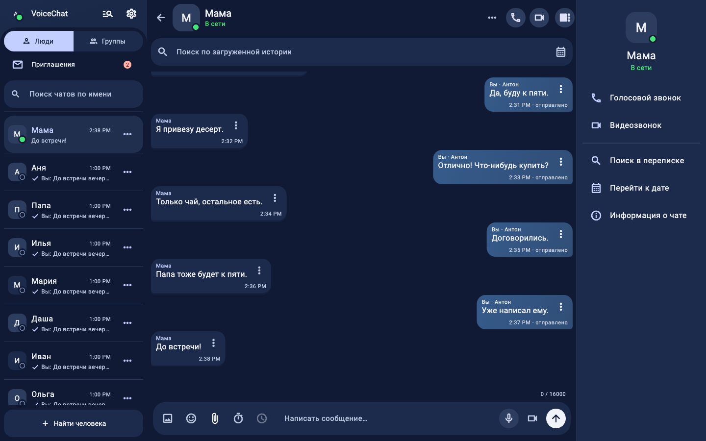
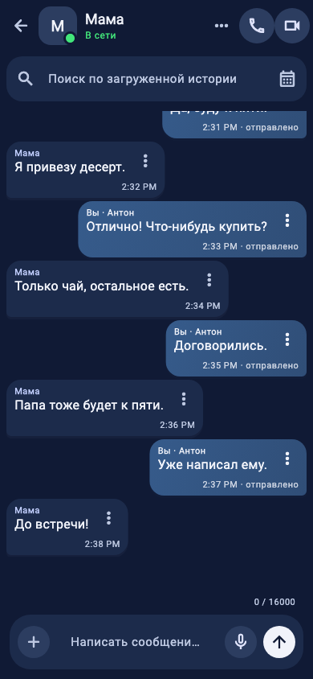
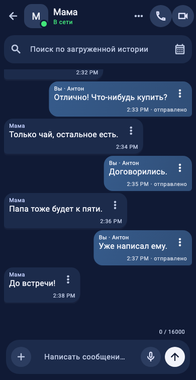
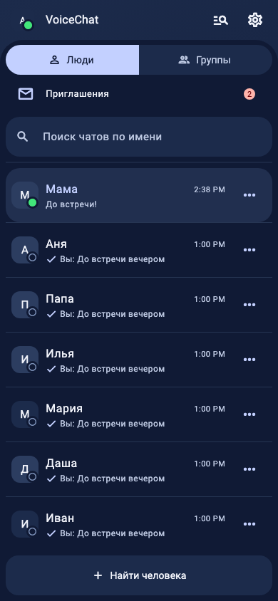

VOICECHAT / CODEX/HALO-DESIGN
Halo — уже в компонентах приложения
Возвращён исходный синий градиент сообщений. Восстановлены обе кнопки звонков, зелёный статус, галочки и приглашения. Правая панель сворачивается с анимацией. Снимки ниже получены из Flutter-компонентов с вымышленными данными.
Артбук: все 135 состояний · Изменения и проверки
Полный веб · общий адаптивный интерфейс


Android · 390 × 844
Мобильный веб · доступная область 390 × 756
Люди · приглашения и галочкиПроверены компоновка и состояния интерфейса. Реальные устройства, звонки, серверная очередь и плавность под нагрузкой требуют отдельной проверки перед выпуском.